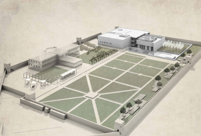

National Museum of Afghanistan
History
The first museum in Afghanistan was established in 1919 at the Bagh-i-Bala palace overlooking Kabul, and consisted of manuscripts, miniatures, weapons and art objects belonging to the former royal families.
A few years later the collection was moved to the king's palace in the ceter of the city and in 1931 it was officially installed in the present building, which had served as the Municipality.
The original collection was dramatically enriched, beginning in 1922, by the first excavations of the Delegation Archeologique Francaise en Afghanistan (DAFA).
Through the years other archaeological delegations have added their finds to the museum until today the collection spans fifty millenniums Prehistoric, Classical, Buddhist, hindu and Islamic and stands as one of the greatest testimonies of antiquity that the world has inherited.
Address
Opposite Darulaman Palace, Darulaman Road, The National Museum of Afghanistan, Kabul, Afghanistan
Tickets
For local visitors:
- Entrance: 20 Afs
- Photo camera: 40 Afs
For Foreign Visitors:
- Entrance : 100 Afs ( 2.5 USD)
- Photo camera: 200 Afs ( 5 USD)
- Postcards, leaflets, brochures, newsletters are available at the information desk at the entrance door.
Partner Museeum in France : Musée du Louvre
Opening Hours
Saturdays – Sundays – Mondays – Tuesdays - Wednesdays - 8:00 A.M to 03:30 P.M
Fridays: 08:00 A.M to 12:00 Noon. Entrance Free
Thursday’s closed.
Rooms are closed 30 minutes before the museum closing time.
Visitors
National Museum of Afghanistan receives guests the whole weekdays except Thursdays and Friday afternoons. International visitors, tourists, diplomats, university and school students, individuals and artists and public can easily visit the museum every day.
Cultural and educational institutions such as universities, private schools or foreign country embassies in Afghanistan or international organizations can visit the National museum with their students, team or staff through a formal application. Museum will also provide them free museum tour guide.
Media and Independent journalists, who are looking for interview and filming of the museum, should contact us at least two days before via email or telephone to coordinate accordingly.
Exhibitions
Bamyan-Borobudur photo exhibition opened at National Museum
On 2 November 2016, Acting Minister of Information and Culture and Deputy Minister on Youth Affairs, Dr. Kamal Sadat, Indonesian ambassador to Kabul and Representative and Director of UNESCO in Kabul opened the exhibition ‘Bamyan- Borobudur’ in the National Museum of Afghanistan.
Borobudur is 8th-9th century old famous Buddhist temple in Indonesia. Addressing the ceremony held on the occasion, Dr. Kamal Sadat hinted on importance of the exhibition in revealing the history and civilization of ancient Bamyan province, adding Bamyan has been a focal point of tourists for its rich historical places since centuries.
Meanwhile Ambassador of Indonesia to Kabul called holding such exhibitions is important for boosting the mutual cultural cooperation and introducing both countries’ old civilization. According to Mohamd Fahim Rahimi, the National Museum director, the exhibition includes 40 photos from the relics and historical sites of Bamyan of Afghanistan and Borobudur temple in Indonesia; He adds it will be opened from (2 November to 30 December 2016). The exhibition has been initiated in close cooperation with Indonesian embassy in Kabul, as the country has recently carried out research on Bamyan’s different aspects of historical and cultural life.
Buddhist Heritage of Afghanistan
A new exhibition was opened in The National Museum of Afghanistan on 29th April 2012. This exhibition that is entitled "Buddhist Heritage of Afghanistan" is depecting a very important part of our history, the Buddhism which has been practiced in Afghanistan for more than 1000 years. Buddhism in Afghanistan trace back to the middle of 3rd century CE and started fading with the arrival of Islam in the 7th century AD. During that long period Buddhism was practiced in Afghanistan along with other native religions. However, Buddhism had the largest number of followers, and sometimes was supproted by some kings of different dynasties that ruled Afghanistan.
Xuan Zang, the Chinese pilgrim who visited Afghanistan in the first half of the 7th century AD has pointed of several Buddhist Monastries and Stupas in different parts of Afghanistan.
The exhibition "Buddhist Heritage of Afghanistan" consists of artifacts and remains found in Buddhist monastries especially south Hindu Kush Montains. By displaying these artifacts with accompanying texts, The National Museum of Afghanistan aims to introduce the life of the historic Buddha, and the history and culture of Buddhism in Afghanistan to the audience.
The exhibition is made by initiative of Ministry of Information and Culture and National Museum of Afghanistan, and was financed by CIE (Centre for International Heritage Activities) of Dutch Government. The exhibition is open to the visitors of museum according to the museum's schedule.
Bactria (thousand Cities)
The region of Bactria, considered by many to be the original habitation of the Arians which always been very famous for its beauty. Bactria or the present-day northern Afghanistan is located between the Hindu Kush and the Oxus River (Amu Darya). On its southern and eastern flanks the Hindu Kush mountain range divides the region from Tibet and India; on its western side lays the grassy downs of Aria and Marginal, today also known as Herat and Marv.
Classical historians speak of the famous wealth of Bactria, its thousand cities, and the outstanding fertility of the soil. The ancient inhabitants are usually depicted to be of brave nature and in order to defend the fertile land of Bactria they were often in confect with the people of the surrounding regions such as the Scythians.
Balkh, the capital of Bactria, played a crucial role as cultural and political center of the famous Pishdadian, Cyanides and Aspa dynasties. It was also known to be the trade centre and crossroads of western and eastern cultures during the Achaemenid period and later. Balkh’s rolls as the trade centre of Bactria would persevere for a long time, as it became the capital of great Greco-Bactrian, Kushan, and Hephtalite Kingdoms.
During the Achaemenid period, Bactria was a semi-autonomous Satrapy (province) and to a large extent preserved its autonomy from the central government .At the same time, it served as a great support for the central government by defending against Scythians and Indians, which were a threat to the eastern part of the Achaemenid Empire in Bactria.
Religious life in Bactria was characterized by a number of religious beliefs and cults of different origin. The Zoroastrian religion emerged in Bactria in the 6th century BC and was founded by Zoroaster, who started the religion by preaching in the Gusshtasp court in Balkh. Buddhism has been also practiced there, until the sacred religion of Islam started flourishing and most of the population became Muslim.
During the last century, several archaeological teams performed excavation work in Bactria and shed more light upon the very little known history of the region.
The archaeological sites date to different periods:
-
Stone Age: Qara Kamar,Aq Kupruk,Darra-i-Kor,Darra-i-Dadil
-
Bronze Age: Dashli,Tepe Fullol,Hazar Som
-
First periods of Arians and Achaemenid period: Citedal of Balkh, Chashma-i-Shafa
-
Greco-Bactria and Scythian period: Ai Khanum, Tela Tepe, Dilberjin Tepe
-
Kushan and later periods: Surkh Kotal, Chamn Qala, Chaqalaq Tepe, Qala Ahngaran
The numerous Archaeological sites discovered in the region of Bactria only support the statements of the Classical historians who speak about the thousand cities of Bactria.
The exhibition includes many artifacts dating from different periods and that were found in different locations in the region Of Bactria.
Stone Age of Bactria
Foreign teams of archaeologist, especially Americans, have led excavations and research on the Stone Age in Bactria. During these excavations many archaeological sites were found and important artifacts belonging to the Stone Age were discovered. The Stone Age is divided into three different periods, based on the sophistication and methods of tool design, namely the Paleolithic, Mesolithic, and Neolithic.
Excavated artifacts from archaeological sites as Qara Kamar, Aq Kupurk, Zistgah Zadyan, Chinar Ginjishkan, and Darra-i-Kor in Bactria belonged to the Paleolithic, Mesolithic, and Neolithic periods. The identifiable material of these artifacts consists mainly of quartz and flint stones. They were mostly used as tools or weapons.
In the Paleolithic period, human life was very simple. During this time people started using tools. Human mostly lived in caves near rivers, lakes, and streams, locations that could easily be defended against predators and rivals. The people subsisted by hunting wild animals for meat but they also gathered food.
During the Mesolithic period gradual domestication of plants and animals started, as well as formation of settled communities. New and more developed stone tools, seen in the development of chipping techniques, characterize the Mesolithic material culture. Sites in Bactria belonging to this period areGharMordaGosfand, Ghar Mar, Darra-i-Kor, Darra-i-Dadil, and Aq Kupurk.
During the Neolithic period, which is also known as the new Stone Age, dependence on domesticated animals and plants increased. Hereby, Human settlements became more permanent.
The technical development of the Neolithic period is characterized by stone tools which are shaped by polishing and grinding. Traces of crafts such as pottery and weaving are also found in this period.
Bactrian sites dating from the Neolithic period are: Darra-i- Kor, Darra-i-Dadil, Aq Kupruk, and Ghar Mar. Artifacts that were discovered include stone circles, Knife-shaped tools, arrowheads, etc.
Bronze Age of Bactria
The Bronze Age in Bactria heralded the emergence of civilization. During the Bronze Age, people started making tools and weapons out of metal. In the Beginning, only pure copper and stone tools were used. Later, by mixing tin with copper humans discovered the copper alloy, Bronze, which was widely used until the discovery of iron around 1000 BCE.
During the Bronze Age, a large Arian ethnic group inhabited Bactria. They established their own Kingdom with an organized system of governance. The Arians introduced irrigation systems that led with several civilized centers of the ancient world. Besides the productivity of the agricultural lands, Bactria was also known for having large mineral resources such as Lapis Lazuli. The semi-precious stone Lapis Lazuli has been found in jewelry of Egyptian pharos and in royal burials of Ur (Iraq), dating back to 2600 BCE which indicate the foreign trade relations of ancient Arianna, when lapis Lazuli was exported from Badakhshan to the major cities of Mesopotamia and further west to Syria and Egypt. Another indication of trade relations are the grave goods from Tepe Fullol and their artistic similarity with artifacts in the Mesopotamian and Indus civilizations. Finds of ceramic, stone, and metal object indicate the presence of adroit craftsmen in the region. Archaeological sites in Bactria dating from the Bronze Age are Dashli, Shortughai, Hazar Som, and others that have not yet been excavated.
Expedition of Alexander and the Greco-Bactrian Kingdom
After the defeat of king of the Persian Achaemenid Empire, Darius-III, Alexander entered Afghanistan through the city of Aria (Herat) and after crossing the Hindu Kush, reached Bactria.
Around that time Basses was the Satrap (governor) of Bactria who also fought together with Darius’ army against Alexander. Unfortunately, he was defeated and Alexander conquered Bactria. However, it took several years for Alexander to establish control in Bactria and suppress the strong insurgency campaign.
In order to secure safe settlements for the many Macedonian and Greek soldiers he left behind, Alexander initiated a massive building campaign and built a series of fortresses. Thus in the 4th century BC one of the first Greek cities in Bactria was formed, called Alexandria of the Oxus. In order to strengthen his relationship with the people of Bactria, Alexander also married Roxana, daughter of Bactrian chief.
After the death of Alexander and the division of his empire, Bactria came under control of the Seleucid dynasty which was founded by Seleucids. Dioditus I rebelled against the Seleucid dynasty and created and independent kingdom. In the 3rd century BC he became known as the governor of Bactria. Thus the Greco-Bactrian numismatic evidence, 41 kings and queens from this Greco-Bactrian dynasty ruled Bactria and the region south of the Hindu Kush. Greek historians described Bactria as an extraordinary combination of wealth. According to Strabo; everything was produced in Bactria except for olive oil.
Naturally, with the rule of the Greek and Macedonians in the Greco-Bactrian kingdom, Hellenistic culture also flourished. Thus, Greek script was used for the Bactrian language, and buildings were built according to the Greek architectural styles by suing elements such as Corinthian, Ionic, and Doric column types.
The excavation of the city of Ai Khanum in Bactria represents a clear evidence of Greeks in the region. While Greek art and the city plan with a gymnasium and temple of gods were made according to the Greek city plans, some native building techniques were also preserved in plans of corridors of the palace, temples, and houses. The ivory pieces found in Ai Khanum are similar to the ivory pieces of Nyssa in Mary and were most probably imported from India to these regions. They show the highly developed trade network of the ancient Scythians, and later the Yuezhis (Kushan), invaded the region.
In recent years the evidence for Corinthian and Ionic capitals has also been discovered in Tepe Zargaran, which may be another important city of the Greco-Bactrian period.
Kushan in Bactria
Greek rule ended with the invasion of yuezhis (Kushan). According to the Chinese sources, Kush an were nomads that consisted of five tribes. After their emergence in Bactria, the Kushan tribes unified and the Kushan Empire was formed under the leadership of Kujula Kadphises. The Kushan Empire grew strong and with time it also extended its control into North India and established an extensive empire.
During the rule of the Kushan, trade with both eastern and western parts of the world improved via the Silk Road. Balkh, the capital of Bactria, becomes an important city for the exchange of products and a connection for Chine, Central Asia, India, and other countries from the West.
Kanishka the Great was the most powerful King of this dynasty and is known for being a liberal king who gave freedom to his people. The coins of his time depict 20 different gods and deities, proving the religious freedom that people enjoyed at his time. The Greek influence on art and literature was still visible in this period and the Greek script was used in the reverse of Kushan coins until the mid-second century AD. Bactrian language written in the Greek script was also used in official papers.
Surkh Kotal is the most famous archaeological site from the Kush an period. Other sites, such as Cham Qala, ChaqalaqTepe, and QalaAhangaran, have also been excavated. At Surkh Kotal inscriptions in the Greek script and Bactrian language have been found as well as statues of theKushan Kings.After the Kushan, Bactria was ruled by Sasanians, Kushano-Sasanians, Kidarites, Hephthalites, and Turk-Shahis. Thereafter, the sacred religion of Islam flourished in the region.
Buddhism in Bactria
In the third century BC, three centuries after the emergence of Buddhism in India, Buddhism spread south of the Hindu Kush. In the second century BC it also spread north of the Hindu Kush into Bactria. It was spread by missionaries sent by Asoka, the Maryann emperor of India who, after embracing Buddhism and committed himself to spread Buddhism in other countries. During this time, Bactria was ruled by Euthydemus of the Greco-Bactrian dynasty. Euthydemus had planned to conquer India and it was in his interest not to prevent the spread of Buddhism in the region of Bactria. However, neither Euthydemus nor any other Greek kings of Bactria, except for Menander, the under-lord in Punjab, ever embraced Buddhism.Therefore, during the 200 years of Greco -Bactrian rule Buddhism remained an unofficial religion that was able spread among the people due to religious freedom.
The most glorious stage of Buddhism in North and Central Afghanistan was during the Kushan period. In this period Kushan Kings, especially Kanishka the Great, was a high patron of this religion.
Hsuan-tsang, the famous Chinese pilgrim who visited Afghanistan in 7th century AD, mentioned that Kunduz in Bactria had more than 10 monasteries and hundreds of monks. He also refers to Balkh, the capital of Bactria, as having 100 Buddhist monasteries and 3000 monks. Buddhist monasteries have been found in excavations conducted in Cham Qala, Chaqalaq Tepa, and Qala Ahngaran. Another Buddhist site in Bactria is the Monastic stupa complex of Takht- e Rustam with sites in Samangan and New Bahar in Balkh.
Ghazni Exhibition
Ghazni, which was the biggest capital of Islamic empire, now is a vast wasteland between Kabul and Kandahar. In ancient time, Ghazni was the centre of Arakuzia province which was conquered constantly by Alexander the Great and his Bactrian substitutes. Recently, a script has been discovered dating back to Ashoka – Buddhist emperor of Koshani. Establishing the fame of the city, there are minarets in east north of Ghzazni that were built upon Sultan Mahmood’s decree. In 961 AC, Alptagin founded the base of his kingdom in here and Sultan Mahmood extended it into a great empire. Sultan Mahmmod’s name is interlinked to a couple of attacks in north of India and as the result of these attacks bases of social life were totally altered in north of India. These triumphs approached to apex after attack on Rajistan and after the time Sumenat Temple- in which people prayed the Sun - was looted.
Several years later, Sultan Mahmood captured entire Iran and after a series of military operation Ghazni turned to the capital of his regime irradiating Islamic world. Great scholars like Ferdowsi and Al-biruni went to his court. Ghaznavian royalty was collapsed after Mahmood’s death and his subtlety was ignited by the flame Alau Din Jahan Soz generated. All culture and civilization left after great ignition was totally demolished by Mongols.
We can find the same subtlety and greatness of Ghaznavi royalty in Baghdad, the capital of Abbasian Caliphates. As a matter of fact, Ghazni was the centre of a civilization that all Arab world exploit it artistically and politically. Ghazna civilization, as represented in our literature and artworks, is a combination of Arabic and Iranian components. Ghaznavi rulers, like their Mongols peers, were fascinated by subtle Persian poetry and art. Like Mongols who employed Muslim artists from all over the Islamic world, Mahmood and his substitutes called for artisans and artists from Iran and Axos. So, taking into consideration these, things we can truly understand that why Ghaznavi art has horizontal perspectives and why conquered Iran had affected it. A few palaces as well as a hunting preserve – for Mahmood the First (1331-1340) were discovered in Lashkari Bazaar and Lashkargah, which are not far from Ghazni. These palaces were built based on Abbasian palaces. Other things like quarters and yards are hinting about pre-Islamic kings in the area.
The collection of Islamic works in Kabul Museum contains a number of marble stones that have been found since last decade. Although imputing these pieces of stones to a specific place is far impossible, they are all memories of great cultural period of Ghaznavi – 11th century AC.
Departments
Department of Museology
This department handles the following tasks along other principles and norms:
- Preparation of albums, installation and description of photos of artworks based on the number
- Registration of works by computer
- Preparation the inventory of collections
- Choosing up works as for exhibition and decoration of rooms, departments and restoration of the objects
- Identification and packing the objects required restoration and care in storerooms, and transmitting them to restoration departments as to restoration, prevention, purification and transportation of the works to storerooms after conservation
- Record-keeping new works sent by security referents and from archaeological sites through Department of Archaeology and individuals to National Museum.
Department of Exhibition
Every historical, cultural and artistic organization holds exhibition off and on displaying their ancient civilizations through art and historical phenomena. Therefore, Exhibition Department has established with National Museum responsible to implement the following:
In doing following, the department is cooperating with Museology Department.
- Preparation of exhibition from different objects from different ancient sites chronologically ...
- Selection of the works as for holding exhibition in cooperation with Department of Museology.
Department of Islamic-period
In this department, Islamic studies are considered. Islamic –period works storeroom is constituted based on excavation sites in cooperation with Department of Museology. Research is being done on Islamic works and assessment of discovered artworks. In terms of restoration of Islamic works, the department works with Department of Museology and Department of Restoration. There are coins along with other works so that the department implements following for assessment and research.
Department of Restoration
Discovered artworks from underneath are somehow broken or damaged so that the Department of Restoration is to do the following:
Repairing restorable works by Department of Museology, prevention and purification of the works delivered to Department of Museology. Restored objects will be sent to storerooms after restoration.
Department of Photography
In order to identify and preserve works of the museum, we need to capture their photos. The department is to implement the following:
- Capturing photos of the works in storerooms before and after restoration
- Capturing photos as for recording in flashcards
- Saving the photos in the computer
- Preparation of albums in CD
Department of Ceramology
The Department of Ceramology was established in 1981 to preserve invaluable collections from various historical sites. The department is constituted in cooperation with la Department Archaeology de France en Afghanistan (DAFA) to prevent clay works from historical sites and then to prepare them for research purposes. Preservation of these works is Ceramology’s task. It will implement its duty in coordination with Museology and Restoration Departments.
Department of Library
Following are what this department is responsible for:
- Appropriate preparation for studying in library
- Alignment of the shelves
- Preparation of an inventory for the books and all printing stuff coming to National Museum
- Preparation of a collection from newspapers and press releasing coming to National Museum
- Alignment of the books based on the language
Department of Numismatic
The department has fulfilled scientific researches on coins in various periods, prepared the storeroom for the coins and preserved the coins in storing boxes based on era in order.
Department of Ethnography
Ethnography Department at the National Museum of Afghanistan
The idea of building up an ethnography museum in Afghanistan was established in 1981. The collection came from the National Museum of Afghanistan, privately by donors and mainly purchased by Ministry of Information and Culture. The practical work has been started at a building close to the Kabul Theater; later in 1985 the collection was housed at the Precedential Palace (Arg) and was exhibited for the public until 1985. The main purpose of this Museum was to create a multi-format from rich society on Afghan people and to present it as lively as possible for the public. The Ethnography staffs worked hard to keep the collection according to the international accepted laws. Unfortunately a dark era came and not only destroyed the country, but also caused the collection to be looted and destroyed.
The year 2001 has brought a new golden era for the National Museum of Afghanistan and has given a chance to Ethnography Museum to come along as a dependent department in the National Museum of Afghanistan. The National Museum of Afghanistan has provided enough space for the valuable items and co-ordinate a team of Afghan and foreigner experts to document register and inventory all the remained collection in bi-lingual data sheets.
In 2005 the Ethnography Department succeeded to lunch the first exhibition titled “Nuristan” meantime the ethnography staff has struggled to complete the process of inventory and picturization. During this process an approximately 4000 number of items was inventoried and printed in three color copies.
The year 2006 marked an important stage in the development of the Ethnographic collection. In that year the museum has received a large number of objects from Switzerland including Ethnographic items almost from all ethnic-groups in Afghanistan. Also in 2008 some objects returned back from London and during past ten years from private donations and government sectors. The items are numbered close to 2000 pieces.
Today the collection contains over 7000 remarkable pieces, includes jewelry, textiles, rugs, carpets, ten bands, embroidered curtains, animal equipment, tools, weapons, musical instrument, vessels and so on. All these items are presenting the rich culture, tradition and custom of ethnic-groups in Afghanistan who are almost sharing inspired work of art.
Another jewel in the collection is the antique Nuristani items including furniture, vessels, weapons, jewelry, house posts, and statues. These items are highly representative of the various functions and principal technical, stylistic and regional characteristic of traditional Nuristani custom.
Department of Recording and Registration
The Department of Recording is implementing the following – according to the law stating about preservation of historical and cultural heritage based on identification of ancient and trade works:
- Issuance of silence for traders of non-antique stuff
- Control over the legal commodities exported abroad
- Fixing price on the legal commodities exported abroad
- Taking %5 tariff from the commodities
- If owner is not satisfied for sale, the commodity goes for the owner
- Permission for exit, reclamation, purchase and other procedures are done according to internal regulation
Department of Administration
Department of Executive takes over assessment of suggestions, preparation of attendance sheet, procurement and other related jobs.
Department of Information
Department of Information is a significant department within National Museum that have remarkable duties. Its responsibilities are to submit ticket for visitors, to keep their stuff in safe, registration of visitors and preparation of daily and weekly reports.
Photo Gallery



Contact Us
| Name | Position | Telephone | |
|---|---|---|---|
| Mohammad Fahim Rahimi | Director of National Museum of Afghanistan | 202520320 | f.rahimi@nationalmuseum.af |
| Amanullah aman | Administration officer | 202520321 | |
| Nadir shah Katawazai | Information and public relation Manager | 93785913269 | Nadirshah@nationalmuseum.af |
| sayed Idress Burhani | Website Manager | 93700999875 | se.buhani@nationalmuseum.af |
Musée Partenaire : Le Louvre